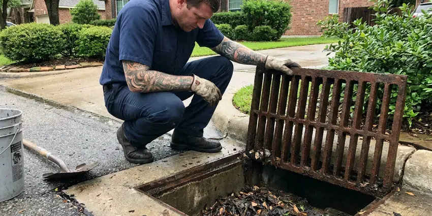

Emergency Plumber in Wildwood, MO
Split pipe, backed-up main or a tank leaking into the garage in Wildwood, MO? A licensed plumber can be on the way tonight.
- Certified for Gas Lines
- Licensed Missouri Plumbers
- Live 24/7 Dispatch
- Nights and Weekends

Burst Pipe or Backup in Wildwood, MO?
Sewage backups and active leaks go first in the dispatch queue.
24/7 Plumbing Repair in Wildwood, MO
FGV Plumbing takes emergency calls at all hours in Wildwood, MO. The usual list is a split supply line, a toilet that keeps overflowing, sewage coming up a floor drain or a water heater leaking from the bottom. Stopping the water comes first. Then our plumber finds the cause and prices the repair before touching it.
Some of what we do:
- Acoustic leak location before any cutting
- No-hot-water diagnosis on tank and tankless units
- Slab leak isolation and repair

Additional Plumbing Maintenance Services in Wildwood, MO
Our maintenance and specialty plumbing services in Wildwood, MO catch small problems before they become emergencies.


Customers
Why Choose FGV Plumbing for Emergency Plumber in Wildwood, MO?
People worry about late-night pricing. We give you the dispatch fee before the truck leaves and the full repair price before the plumber starts, and that number holds unless you approve a change. You decide whether a fix happens tonight or waits for regular hours.
- Phone Shutoff Help, We talk you through the shutoff before the plumber arrives.
- Missouri Licensed, Our plumbers are licensed in Missouri and work to the plumbing and fuel gas codes your city enforces.
- Licensed Techs, A licensed plumber runs every emergency call, not a trainee working alone.
Citywide Coverage
Our emergency trucks cover every part of Wildwood, from older blocks with galvanized pipe to new subdivisions plumbed in PEX. The nearest truck gets the call. We give a real arrival window, even when calls stack up.
Experienced Team
A good emergency plumber talks plainly. They show you the failed part, explain what caused it, and quote the fix in writing before starting, even at 2 a.m. when you just want it done.
Safety-First Approach
If you smell gas, leave the home and call your gas utility or 911 from outside. Call us after that. Our licensed plumbers repair gas lines to the fuel gas code and test them under pressure before any appliance is relit.
Trusted Certified Wildwood Plumbing Services Professionals
At FGV Plumbing, we take pride in licensed, certified plumbing services throughout Wildwood, MO. Those papers on the wall mean something. Our plumbers hold recognized industry credentials, and they follow strict safety and quality rules on every repair, installation and maintenance call we run.
Call Us Now PHCC Plumbing Contractor Recognition
PHCC Plumbing Contractor Recognition Better Business Bureau (BBB) Accreditation
Better Business Bureau (BBB) Accreditation Angi Certified Pro
Angi Certified Pro ISO 9001 Quality Management Certification
ISO 9001 Quality Management CertificationEmergency Plumbing Jobs We Handle in Wildwood, MO
Emergency Slab Leak Response in Wildwood, MO
Hearing water with every fixture off is a classic slab leak sign. So is a hot spot on the floor. We isolate the hot or cold side first, which keeps some water running for the night, then locate the leak with acoustic and thermal gear. Repairs include a direct cut through the slab, a reroute through the walls or attic, or a partial repipe of that branch.

Emergency Plumbing Price Ranges in Wildwood, MO
Expect an after-hours dispatch fee of roughly $100 to $250 on top of the repair. A burst pipe fix commonly runs $250 to $800, and clearing a main line from the cleanout usually runs $250 to $600. Water heater replacements usually cost $1,500 to $3,500 installed, depending on fuel type and venting. A delay seldom saves anything.
Gas Odor Calls in Wildwood, MO
If you smell gas indoors, leave first. Call 911 or the gas utility once you are a safe distance away, and do not start a car in an attached garage. After the scene is cleared, our licensed plumbers locate the leak, replace the bad pipe and pressure test the whole run. We inspect each appliance connector as well.
Emergency Water Heater Repair in Wildwood
At night, lost hot water is usually a control failure rather than a dead tank. On gas units, we check the thermocouple or flame sensor, the gas valve and the venting. Electric tanks get their elements and thermostats tested with a meter. Tankless units get a scale check. We carry common parts for Rheem, AO Smith, Bradford White and Rinnai, so many of these get fixed before you go back to bed.
Overflowing Toilets and Runaway Fixtures in Wildwood
A faucet that will not shut off will soak a sink base quickly. Older multi-turn stops often seize, so the homeowner cannot close them. We replace the cartridge, fill valve or flapper that failed, then change the seized stop to a quarter-turn valve. That way you can shut it off yourself next time.
Overflowing Toilet Help in Wildwood, MO
Turn the oval valve behind the toilet clockwise. That stops the tank from refilling. We clear the blockage with a closet auger, which will not scratch porcelain, and check whether the clog sits in the trap or further down the line, because a weekly overflow tends to mean trouble in the main. A failed fill valve or a seized stop gets replaced while we are there.
Emergency Plumbing for Rentals and Businesses in Wildwood
A burst line in a second-floor apartment soaks the unit underneath quickly. We respond after hours and on weekends to rentals, offices and restaurants, including multi-unit supply risers, grease lines and commercial water heaters. Managers can set up a direct account. Dispatch then has your unit notes, shutoff locations and approval limits on file.

Water Heater Emergencies in Wildwood
Water pooling under a tank usually means the inner liner has rusted through, and no part will fix that. A leak at the top is different. It is often a loose union, a failed flex connector or a weeping relief valve, and our plumbers can usually fix those in one visit on most common brands. If the tank is done, we shut it down safely and schedule a fast replacement.
Emergency Plumber Near Me in Wildwood, MO
Our plumbers live and work around Wildwood, MO, which makes the follow-up visit easy. A temporary fix at midnight can become a full repair during regular hours, often with the same plumber who handled the night call.
Distance matters on a burst pipe. We keep trucks spread around Wildwood, MO and send whichever licensed plumber is nearest, and the dispatcher gives you a real arrival window instead of a guess, including busy freeze nights when calls stack up.
FGV Plumbing at a Glance
- Licensed and insured plumbers serving Wildwood, MO
- 24/7 emergency service with same-day scheduling
- Upfront, flat-rate pricing before work begins
- 4.9-star rated by 307+ Missouri customers
Wildwood Map
Wildwood Information
- Population
- 34,851
- Area codes
- Local
- Service area
- Wildwood and communities within 40 miles
- Nearby
- Ballwin, Chesterfield, St. Peters, O'Fallon
A hard freeze splits pipe in exterior walls and crawl spaces, and the leak usually shows up when the line thaws. In Wildwood, MO, calling early keeps the drywall and insulation losses small. Hard freezes happen every winter in Missouri, and the northern part of the state usually sees longer cold spells than the south.
Talk to a Plumber
Reach out to FGV Plumbing for reliable plumbing work done by licensed pros in Wildwood, MO.
Our Specialized Plumbing Services in Wildwood, MO
At FGV Plumbing, we handle the full list of plumbing services across Wildwood, MO. From leak detection to full system installs, our team works fast and charges fair prices on homes and commercial properties alike. Take a look at our core services below:


From Phone Call to Fixed in Wildwood, MO
We stop the water first and discuss the repair second. That order never changes.
Call and Shut Off
Call (816) 330-2338. The dispatcher helps you close the main and confirms the emergency rate.
Plumber Dispatched
The nearest licensed plumber heads out to your Wildwood home with a stocked truck and an arrival window.
Diagnose and Price
Our plumber locates what failed and gives you a price before starting.
Frequently Asked Questions About Emergency Plumber in Wildwood
Simple calls like a clogged toilet run about $150 to $350 during regular hours. Nights and weekends carry a dispatch fee. Bigger jobs, like a burst pipe or a sewer repair at night, can reach $500 to $2,000 or more depending on access and materials, and you get a written estimate first.
Small repairs like clearing a clog typically need no permit. Water heater replacements, sewer line replacements and gas line work usually require one from your building department. We pull it for you.
Anything that is damaging the house right now or makes the plumbing unusable. That includes sewage backups and burst pipes. So does a toilet that will not stop overflowing after a flush, any gas odor, or no water at all.
Figure on 60 to 90 minutes for most addresses in Wildwood, with true emergencies moved to the front. The dispatcher gives you a real window.
Minor fixes like a faucet or a clog do not need one. Bigger jobs in Wildwood, including water heater replacement, main sewer repair or a repipe, usually require a permit and an inspection.
Usually not. Focus on stopping the water. Find the main shutoff, often near the front hose bib or in a meter box at the curb, and close it, then leave the actual repair to someone with the right fittings and tools.
Watch the water meter with every fixture off. A moving dial means a leak somewhere. Other clues include damp drywall, a musty smell, bubbling paint and a water bill that jumps without any change in use.
Water spraying from a pipe, sewage in a drain, a gas smell or a tank dripping from the bottom call for a plumber right away. A sudden drop to no water pressure belongs on that list. Slow drains can usually wait.
What Our Customers Say About Our Plumbing Experts

Rachel N.
Hard water was leaving white crust on every faucet and our dishwasher was struggling. The tech tested the water, recommended a softener sized for a family of five, and installed it with a bypass valve in one afternoon. The spots on our glasses are gone.
Water Softener · University City, MO
Laura S.
Our 40 gallon tank started leaking from the bottom after thirteen years. The tech hauled the old one out, set a new unit with a fresh expansion tank, and had hot water running in about four hours. He took the old tank with him too.
Water Heater Replacement · Ballwin, MO
Kevin O.
Before buying our house I paid for a sewer camera inspection. FGV Plumbing found a belly in the line that held standing water about forty feet from the cleanout. We used the video to get the sellers to fix it before closing.
Sewer Camera Inspection · St. Charles, MO
Angela D.
Our sump pump quit during a storm and the water was an inch from the basement carpet. FGV Plumbing put in a new pump with a battery backup that same evening. We have had two heavy rains since. It kicked on both times.
Sump Pump · University City, MOJames P.
Our restaurant had a slow leak at the hand sink that was rotting the cabinet base. FGV Plumbing came in at six in the morning before prep, replaced the trap and both supply lines, and was packed up before my first cook clocked in.
Commercial Plumbing · Wildwood, MOEmily R.
The shutoff valve under our kitchen sink snapped off in my hand on a Sunday morning. FGV Plumbing had someone out by early afternoon. He replaced both angle stops with quarter turn valves and showed me where our main shutoff was, which I honestly did not know.
Plumbing Repair · St. Charles, MO